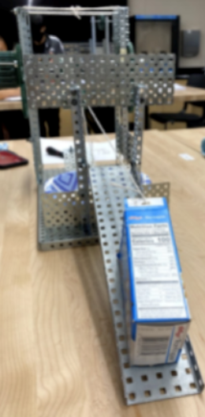

World Geography Hangman AP CSP; SCRUM Group Project - Nov 15, 2020
This World Geography Hangman Project was made using Python version 3.7.4 through Visual Studio Code. My team decided to give the Hangman Project a geography theme. The game begins by displaying a world map and giving the user instructions on how to play the game, prompting them to guess letters in order to obtain a predefined word. This game is not only interactive, but also fun as the project excites the user by giving hints as to how long the word is. This project helped my partner and I get used to the SCRUM process and environment. After the SCRUM process, I made a video of the project’s program running, which enhanced my video editing skills. I also had to document the two sprints I created and worked on in order to complete this project, including the sprint and product backlog, along with written responses detailed to how the project would satisfy the AP CSP Create Task rubric, preparing me on how to successfully write my written responses for my AP CSP Create Task.
APP ALPHAS Phishy Tank Case AP CSP; SCRUM Group Project - Mar 10, 2021
This Phishy Tank Case was solved through a SCRUM Process, where we analyzed folders of files containing downloads in order to find suspicious hacker code. The objective was to solve a case where a GUI error kept reappearing whenever someone tried to check the settings of a fish tank. The case was solved by my group of two other people when we discovered errors in the “magnesium.py” file, the “alkalinity.py” file, and the “temperature.py” file. We were able to fix the errors, rendering the program useful to check the settings of the fish tank. My partners and I documented the SCRUM process, the sprint backlog and product backlog, the sprints, the client reports which were used to report back to the fish tank owner, and I wrote written responses on why my project satisfied the CSE Create Task Prep Rubric. I also had to create a video, which was enhanced by video editing skills.
The Serious Cereal Pourer Honors POE - September 15, 2021
Project Compound required a mechanism that used compound machines in order to carry out everyday tasks. My team was assigned to Design, Build, and Test a prototype to complete an everyday task for members of the Compound. The task we chose was to pour cereal into a bowl. By spinning a wheel, a rotating axle controls 2 compound gear trains. One compound gear train pulls the wedge which elevated the cereal bowl while the other one drags the cereal box over the edge using a simple pulley to tip it into the cereal bowl. The inclined plane drags a cereal box while a wedge elevates the cereal bowl. (MA) Mechanical Advantages: Inclined Plane - 2.67, Wedge - 4.29, Pulley - 1, Wheel and Axle - 1.58. The total MA is 18.10, which is reasonably high, making our compound “Serious Cereal Pourer” useful.